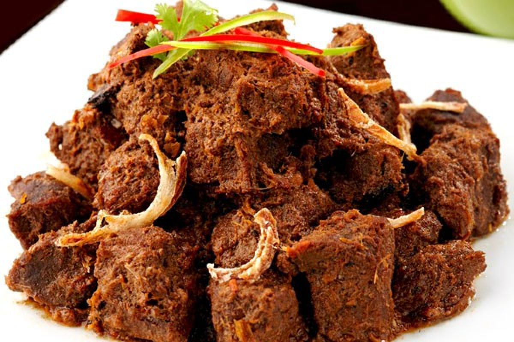
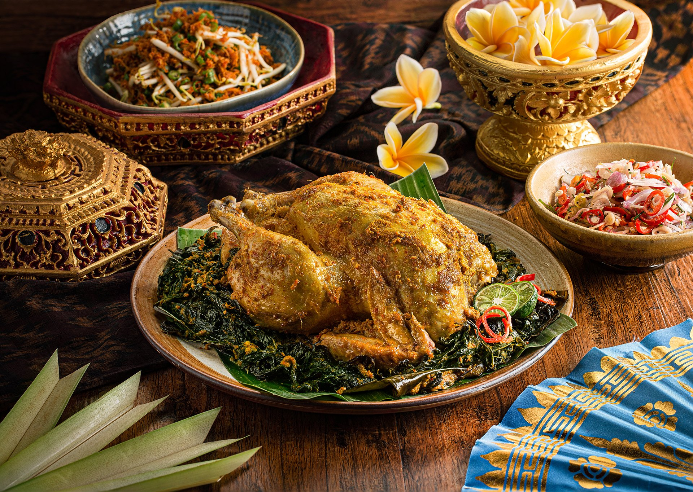
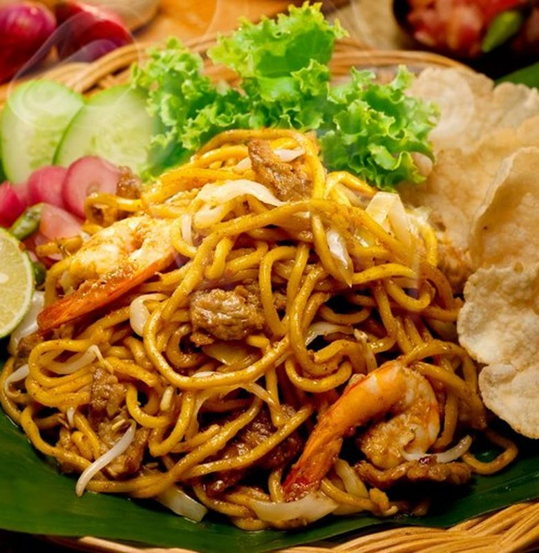
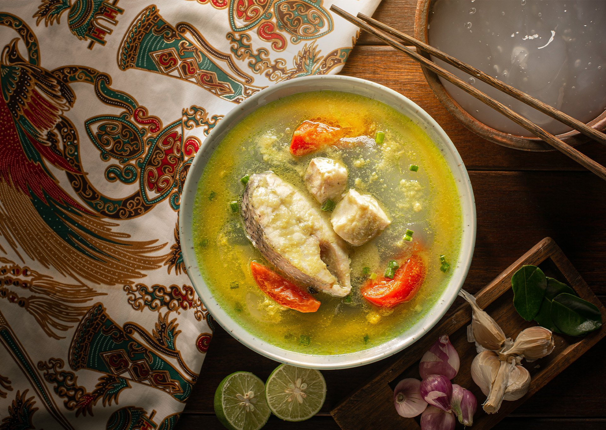
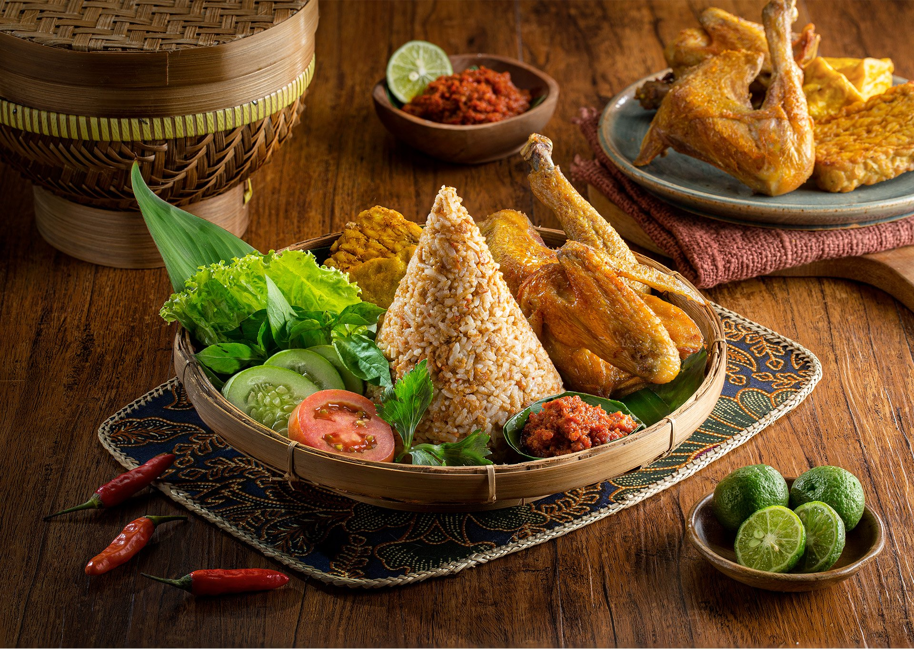

Makanan Khas Lampung Klik
Seruit adalah masakan khas Lampung yang terbuat dari ikan bakar atau goreng yang dicampur dengan sambal terasi dan tempoyak (olahan durian)
Kumpulan foto dan vidio pilihan yang menampilkan makanan khas Indonesia. Klik untuk menampilkan video .
Seruit adalah masakan khas Lampung yang terbuat dari ikan bakar atau goreng yang dicampur dengan sambal terasi dan tempoyak (olahan durian)

Rendang adalah makanan khas Padang yang terkenal di seluruh dunia. Makanan ini berupa olahan daging (biasanya daging sapi) yang dimasak dalam waktu lama dengan santan dan rempah-rempah hingga kuahnya mengering dan dagingnya empuk.

Ayam betutu adalah hidangan ayam khas Bali yang terkenal dengan bumbu rempah yang kaya dan cita rasa pedas serta gurih

Mie Aceh adalah hidangan mie khas dari Aceh, Indonesia, yang terkenal dengan kuah karinya yang kaya rempah dan pedas, serta mie kuning tebalnya

Papeda Adalah salah satu makanan khas masyarakat papua yang di hasilkan dari tepung sagu

Tutug oncom adalah makanan khas Jawa Barat, khususnya dari daerah Tasikmalaya. Makanan ini merupakan nasi yang dicampur dengan oncom yang telah dihaluskan atau ditumbuk